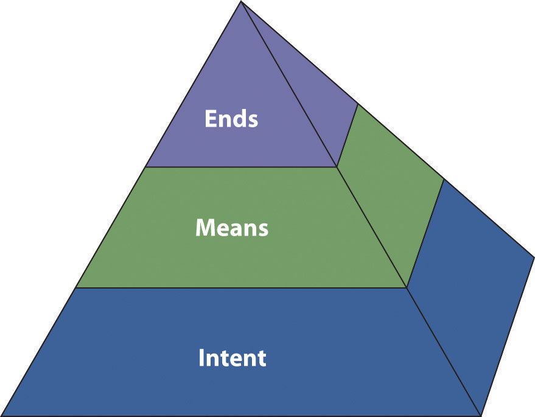

The word “ethics” can mean different things to different people. Whether it is an ethical lapse in business or politics or a disagreement about medical treatments and end-of-life choices, people come into contact with ethical dilemmas regularly. Speakers and listeners of public speech face numerous ethical dilemmas as well. What kinds of support material and sources are ethical to use? How much should a speaker adapt to an audience without sacrificing his or her own views? What makes a speech ethical?
Figure 2.1 Ethical Pyramid
Elspeth Tilley, a public communication ethics expert from Massey University, proposes a structured approach to thinking about ethics.Tilley, E. (2005). The ethics pyramid: Making ethics unavoidable in the public relations process. Journal of Mass Media Ethics, 20, 305–320. Her ethics pyramid involves three basic concepts: intent, means, and ends. Figure 2.1 "Ethical Pyramid" illustrates the Tilley pyramid.
According to Tilley, the first major consideration to be aware of when examining the ethicality of something is the issue of intentThe degree to which an individual is cognitively aware of her or his behavior, the means one uses, and the ends one achieves.. To be an ethical speaker or listener, it is important to begin with ethical intentions. For example, if we agree that honesty is ethical, it follows that ethical speakers will prepare their remarks with the intention of telling the truth to their audiences. Similarly, if we agree that it is ethical to listen with an open mind, it follows that ethical listeners will be intentional about letting a speaker make his or her case before forming judgments.
One option for assessing intent is to talk with others about how ethical they think a behavior is; if you get a variety of answers, it might be a sign that the behavior is not ethical and should be avoided. A second option is to check out existing codes of ethics. Many professional organizations, including the Independent Computer Consultants Association, American Counseling Association, and American Society of Home Inspectors, have codes of conduct or ethical guidelines for their members. Individual corporations such as Monsanto, Coca-Cola, Intel, and ConocoPhillips also have ethical guidelines for how their employees should interact with suppliers or clients. Even when specific ethical codes are not present, you can apply general ethical principles, such as whether a behavior is beneficial for the majority or whether you would approve of the same behavior if you were listening to a speech instead of giving it.
In addition, it is important to be aware that people can engage in unethical behavior unintentionally. For example, suppose we agree that it is unethical to take someone else’s words and pass them off as your own—a behavior known as plagiarism. What happens if a speaker makes a statement that he believes he thought of on his own, but the statement is actually quoted from a radio commentator whom he heard without clearly remembering doing so? The plagiarism was unintentional, but does that make it ethical?
Tilley describes the meansThe tools or behaviors that one employs to achieve a desired outcome. you use to communicate with others as the second level of the ethics pyramid. According to McCroskey, Wrench, and Richmond,McCroskey, J. C., Wrench, J. S., & Richmond, V. P. (2003). Principles of public speaking. Indianapolis, IN: The College Network. “means” are the tools or behaviors we employ to achieve a desired outcome. We must realize that there are a range of possible behavioral choices for any situation and that some choices are good, some are bad, and some fall in between.
For example, suppose you want your friend Marty to spend an hour reviewing a draft of your speech according to criteria, such as audience appropriateness, adequate research, strong support of assertions, and dynamic introduction and conclusion. What means might you use to persuade Marty to do you this favor? You might explain that you value Marty’s opinion and will gladly return the favor the next time Marty is preparing a speech (good means), or you might threaten to tell a professor that Marty cheated on a test (bad means). While both of these means may lead to the same end—having Marty agree to review your speech—one is clearly more ethical than the other.
The final part of the ethics pyramid is the ends. According to McCroskey, Wrench, and Richmond,McCroskey, J. C., Wrench, J. S., & Richmond, V. P. (2003). Principles of public speaking. Indianapolis, IN: The College Network. endsThe outcomes that one desires to achieve. are those outcomes that you desire to achieve. Examples of ends might include persuading your audience to make a financial contribution for your participation in Relay for Life, persuading a group of homeowners that your real estate agency would best meet their needs, or informing your fellow students about newly required university fees. Whereas the means are the behavioral choices we make, the ends are the results of those choices.
Like intentions and means, ends can be good or bad, or they can fall into a gray area where it is unclear just how ethical or unethical they are. For example, suppose a city council wants to balance the city’s annual budget. Balancing the budget may be a good end, assuming that the city has adequate tax revenues and areas of discretionary spending for nonessential services for the year in question. However, voters might argue that balancing the budget is a bad end if the city lacks these things for the year in question, because in that case balancing the budget would require raising taxes, curtailing essential city services, or both.
When examining ends, we need to think about both the source and the receiver of the message or behavior. Some end results could be good for the source but bad for the receiver, or vice versa. Suppose, for example, that Anita belongs to a club that is raffling off a course of dancing lessons. Anita sells Ben a ten-dollar raffle ticket. However, Ben later thinks it over and realizes that he has no desire to take dancing lessons and that if he should win the raffle, he will never take the lessons. Anita’s club has gained ten dollars—a good end—but Ben has lost ten dollars—a bad end. Again, the ethical standards you and your audience expect to be met will help in deciding whether a particular combination of speaker and audience ends is ethical.
Ultimately, understanding ethics is a matter of balancing all three parts of the ethical pyramid: intent, means, and ends. When thinking about the ethics of a given behavior, Tilley recommends asking yourself three basic questions:
While you do not need to ask yourself these three questions before enacting every behavior as you go through a day, they do provide a useful framework for thinking through a behavior when you are not sure whether a given action, or statement, may be unethical. Ultimately, understanding ethics is a matter of balancing all three parts of the ethical pyramid: intent, means, and ends.